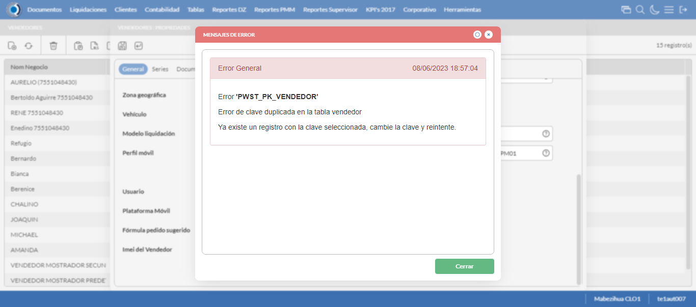

Desarrollado por : Area de Testing PWST
Fecha y hora de inicio : 2023-06-08 12:55:40
Duracion : 0:02:31.197379
Resultado : Total 8，Correctos 8 ，Taza de resultado 100.00%
Resumen 100.00% Errores 0 Fallidos 0 Correctos 8 Test realizados 8
| Caso de Prueba | Total | Correctos | Fallido | Error | Detalles | Captura del error |
| Vendedores.Test: Escenario 1 de Vendedores | 8 | 8 | 0 | 0 | Detalles | |
test |
pt1_1: 2023-06-08 12:55:42,149 - root - INFO - Se abre el chrome
2023-06-08 12:55:43,369 - root - INFO - Entra a la URL
2023-06-08 12:55:43,494 - root - INFO - Maximiza la pantalla
|
|
||||
test_000: Ingresa a la base de datos |
pt1_2: 2023-06-08 12:55:46,574 - root - INFO - Escribe el usuario
2023-06-08 12:55:46,666 - root - INFO - Escribe la contraseña
2023-06-08 12:55:46,730 - root - INFO - Se dio clic en el boton ingresar
2023-06-08 12:55:48,979 - root - INFO - Ejecutar Enterprise
2023-06-08 12:55:53,017 - root - INFO - Cambia entre pestañas
|
|
||||
test_001: Abre menu y ejecuta pantalla |
pt1_3: 2023-06-08 12:55:56,950 - root - INFO - Abre la pantalla de Vendedores
2023-06-08 12:55:57,574 - root - INFO - La pantalla ejecutada es Vendedores
2023-06-08 12:55:57,574 - root - INFO - Captura: C:\xampp\htdocs\versiones\automatizaciones\AutoPWST\01VE\report\img screen：20230608_12_55_57.png
2023-06-08 12:56:08,010 - root - INFO - Se presiona el boton 'Nuevo', para crear un nuevo registro.
|
|||||
test_002: Abre la ventana de nuevo y crear un registro |
pt1_4: 2023-06-08 12:56:09,087 - root - INFO - Se abrio la pantalla para el ingreso de un registro nuevo.
2023-06-08 12:56:09,111 - root - INFO - El campo 'Codigo' si se encuentra visible.
2023-06-08 12:56:09,133 - root - INFO - El campo 'Código Alternativo' si se encuentra visible.
2023-06-08 12:56:09,155 - root - INFO - El campo 'Código Usuario' si se encuentra visible.
2023-06-08 12:56:09,177 - root - INFO - El campo 'Nom Negocio' si se encuentra visible.
2023-06-08 12:56:09,197 - root - INFO - El campo 'Documento de Identidad' si se encuentra visible.
2023-06-08 12:56:09,219 - root - INFO - El campo 'Calle' si se encuentra visible.
2023-06-08 12:56:09,239 - root - INFO - El campo 'Nro. Puerta' si se encuentra visible.
2023-06-08 12:56:09,261 - root - INFO - El campo 'Esquinas' si se encuentra visible.
2023-06-08 12:56:09,281 - root - INFO - El campo 'Teléfonos' si se encuentra visible.
2023-06-08 12:56:09,303 - root - INFO - El campo 'Empresa base' si se encuentra visible.
2023-06-08 12:56:09,357 - root - INFO - El campo 'Cuenta base' si se encuentra visible.
2023-06-08 12:56:09,380 - root - INFO - El campo 'Distribuidor base' si se encuentra visible.
2023-06-08 12:56:09,401 - root - INFO - El campo 'Agencia' si se encuentra visible.
2023-06-08 12:56:09,432 - root - INFO - El campo 'Oficina' si se encuentra visible.
2023-06-08 12:56:09,465 - root - INFO - El campo 'Depósito' si se encuentra visible.
2023-06-08 12:56:09,491 - root - INFO - El campo 'Modelo liquidación' si se encuentra visible.
2023-06-08 12:56:09,519 - root - INFO - El campo 'Perfil móvil' si se encuentra visible.
2023-06-08 12:56:09,546 - root - INFO - El campo 'Tipo de Vendedor' si se encuentra visible.
2023-06-08 12:56:09,573 - root - INFO - El campo 'Plataforma Móvil' si se encuentra visible.
2023-06-08 12:56:09,611 - root - INFO - El campo 'Fórmula pedido sugerido' si se encuentra visible.
2023-06-08 12:56:09,637 - root - INFO - El campo 'Habilitar Encuestas' si se encuentra visible.
2023-06-08 12:56:09,688 - root - INFO - Ingresa el codigo del nuevo registro
2023-06-08 12:56:09,762 - root - INFO - Ingresa el codigo alternativo del nuevo registro
2023-06-08 12:56:09,847 - root - INFO - Ingresa el codigo usuario del nuevo registro
2023-06-08 12:56:09,963 - root - INFO - Ingresa el Nom Negocio del nuevo registro
2023-06-08 12:56:10,073 - root - INFO - Ingresa el Documento de Identidad del nuevo registro
2023-06-08 12:56:10,167 - root - INFO - Ingresa la calle del nuevo registro
2023-06-08 12:56:10,261 - root - INFO - Ingresa el nro puerta del nuevo registro
2023-06-08 12:56:10,369 - root - INFO - Ingresa la Esquina 1 del nuevo registro
2023-06-08 12:56:10,442 - root - INFO - Ingresa la Esquina 2 del nuevo registro
2023-06-08 12:56:10,519 - root - INFO - Ingresa el Telefono 1 del nuevo registro
2023-06-08 12:56:10,586 - root - INFO - Ingresa el Telefono 2 del nuevo registro
2023-06-08 12:56:29,840 - root - INFO - Captura: C:\xampp\htdocs\versiones\automatizaciones\AutoPWST\01VE\report\img screen：20230608_12_56_29.png
2023-06-08 12:56:30,016 - root - INFO - Se hace el cambio de pestaña para continuar con el registro nuevo
2023-06-08 12:56:30,611 - root - INFO - Se presiona el boton 'Nuevo', para crear un nuevo registro.
2023-06-08 12:56:31,162 - root - INFO - El campo 'Serie base' si se encuentra visible.
2023-06-08 12:56:31,190 - root - INFO - El campo 'Tipo Impresora' si se encuentra visible.
2023-06-08 12:56:31,214 - root - INFO - El campo 'Puerto Impresora' si se encuentra visible.
2023-06-08 12:56:31,242 - root - INFO - El campo 'Impresora + Lenguaje' si se encuentra visible.
2023-06-08 12:56:31,268 - root - INFO - El campo 'Clave correlativo' si se encuentra visible.
2023-06-08 12:56:31,295 - root - INFO - El campo 'Desde número' si se encuentra visible.
2023-06-08 12:56:31,328 - root - INFO - El campo 'Hasta número' si se encuentra visible.
2023-06-08 12:56:33,016 - root - INFO - Ingresa la Clave Correlativo del nuevo registro
2023-06-08 12:56:33,084 - root - INFO - Ingresa Desde Numero del nuevo registro
2023-06-08 12:56:33,145 - root - INFO - Ingresa Hasta Numero del nuevo registro
2023-06-08 12:56:33,206 - root - INFO - Se presiona el boton 'Guardar', para guardar el registro.
2023-06-08 12:56:33,895 - root - INFO - Se hace el cambio de pestaña para continuar con el registro nuevo
2023-06-08 12:56:34,466 - root - INFO - Se presiona el boton 'Nuevo', para crear un nuevo registro.
2023-06-08 12:56:35,009 - root - INFO - El campo 'Tipo documento' si se encuentra visible.
2023-06-08 12:56:35,035 - root - INFO - El campo 'Modelo de Impresión' si se encuentra visible.
2023-06-08 12:56:37,799 - root - INFO - Se presiona el boton 'Guardar', para guardar el registro.
2023-06-08 12:56:38,042 - root - INFO - Se hace el cambio de pestaña para continuar con el registro nuevo
2023-06-08 12:56:38,801 - root - INFO - Se presiona el boton 'Nuevo', para crear un nuevo registro.
2023-06-08 12:56:39,351 - root - INFO - El campo 'Tipo Documento 2' si se encuentra visible.
2023-06-08 12:56:39,370 - root - INFO - El campo 'Modelo de Impresión' si se encuentra visible.
2023-06-08 12:56:41,824 - root - INFO - Se presiona el boton 'Guardar', para guardar el registro.
2023-06-08 12:56:42,940 - root - INFO - Se da clic en el boton Guardar; se debe crear un nuevo registro.
|
|||||
test_003: Repetir el registro creado anteriormente |
pt1_5: 2023-06-08 12:56:44,962 - root - INFO - Se presiona el boton 'Refrescar', para crear un nuevo registro igual al anterior.
2023-06-08 12:56:45,016 - root - INFO - Se presiona el boton 'Nuevo', para crear un nuevo registro igual al anterior.
2023-06-08 12:56:45,563 - root - INFO - Se abrio la pantalla para el ingreso de un registro nuevo.
2023-06-08 12:56:45,588 - root - INFO - El campo 'Codigo' si se encuentra visible.
2023-06-08 12:56:45,609 - root - INFO - El campo 'Código Alternativo' si se encuentra visible.
2023-06-08 12:56:45,631 - root - INFO - El campo 'Código Usuario' si se encuentra visible.
2023-06-08 12:56:45,655 - root - INFO - El campo 'Nom Negocio' si se encuentra visible.
2023-06-08 12:56:45,678 - root - INFO - El campo 'Documento de Identidad' si se encuentra visible.
2023-06-08 12:56:45,709 - root - INFO - El campo 'Calle' si se encuentra visible.
2023-06-08 12:56:45,768 - root - INFO - El campo 'Nro. Puerta' si se encuentra visible.
2023-06-08 12:56:45,798 - root - INFO - El campo 'Esquinas' si se encuentra visible.
2023-06-08 12:56:45,826 - root - INFO - El campo 'Teléfonos' si se encuentra visible.
2023-06-08 12:56:45,868 - root - INFO - El campo 'Empresa base' si se encuentra visible.
2023-06-08 12:56:45,900 - root - INFO - El campo 'Cuenta base' si se encuentra visible.
2023-06-08 12:56:45,926 - root - INFO - El campo 'Distribuidor base' si se encuentra visible.
2023-06-08 12:56:45,955 - root - INFO - El campo 'Agencia' si se encuentra visible.
2023-06-08 12:56:45,987 - root - INFO - El campo 'Oficina' si se encuentra visible.
2023-06-08 12:56:46,018 - root - INFO - El campo 'Depósito' si se encuentra visible.
2023-06-08 12:56:46,070 - root - INFO - El campo 'Modelo liquidación' si se encuentra visible.
2023-06-08 12:56:46,101 - root - INFO - El campo 'Perfil móvil' si se encuentra visible.
2023-06-08 12:56:46,129 - root - INFO - El campo 'Tipo de Vendedor' si se encuentra visible.
2023-06-08 12:56:46,158 - root - INFO - El campo 'Plataforma Móvil' si se encuentra visible.
2023-06-08 12:56:46,191 - root - INFO - El campo 'Fórmula pedido sugerido' si se encuentra visible.
2023-06-08 12:56:46,223 - root - INFO - El campo 'Habilitar Encuestas' si se encuentra visible.
2023-06-08 12:56:46,289 - root - INFO - Ingresa el codigo del nuevo registro
2023-06-08 12:56:46,384 - root - INFO - Ingresa el codigo alternativo del nuevo registro
2023-06-08 12:56:46,461 - root - INFO - Ingresa el codigo usuario del nuevo registro
2023-06-08 12:56:46,568 - root - INFO - Ingresa el Nom Negocio del nuevo registro
2023-06-08 12:56:46,660 - root - INFO - Ingresa el Documento de Identidad del nuevo registro
2023-06-08 12:56:46,759 - root - INFO - Ingresa la calle del nuevo registro
2023-06-08 12:56:46,841 - root - INFO - Ingresa el nro puerta del nuevo registro
2023-06-08 12:56:46,939 - root - INFO - Ingresa la Esquina 1 del nuevo registro
2023-06-08 12:56:47,016 - root - INFO - Ingresa la Esquina 2 del nuevo registro
2023-06-08 12:56:47,081 - root - INFO - Ingresa el Telefono 1 del nuevo registro
2023-06-08 12:56:47,143 - root - INFO - Ingresa el Telefono 2 del nuevo registro
2023-06-08 12:57:04,047 - root - INFO - Se da clic en el boton Guardar; se debe crear un nuevo registro.
2023-06-08 12:57:05,047 - root - INFO - Captura: C:\xampp\htdocs\versiones\automatizaciones\AutoPWST\01VE\report\img screen：20230608_12_57_05.png
2023-06-08 12:57:06,199 - root - INFO - Captura: C:\xampp\htdocs\versiones\automatizaciones\AutoPWST\01VE\report\img screen：20230608_12_57_06.png
2023-06-08 12:57:11,656 - root - INFO - Se presiona el boton 'Cerrar', para cerrar el mensaje de duplicidad de llave primaria
2023-06-08 12:57:12,657 - root - INFO - Captura: C:\xampp\htdocs\versiones\automatizaciones\AutoPWST\01VE\report\img screen：20230608_12_57_12.png
2023-06-08 12:57:12,935 - root - INFO - Se presiona el boton 'Cerrar', para cerrar el mensaje de duplicidad de llave primaria
2023-06-08 12:57:13,151 - root - INFO - Se presiona el boton 'Cerrar', para cerrar la ventana
|
 | ||||
test_004: Modificar el registro |
pt1_6: 2023-06-08 12:57:13,337 - root - INFO - Se presiona el boton 'Refrescar', para crear un nuevo registro igual al anterior.
2023-06-08 12:57:16,964 - root - INFO - Se da clic en el registro creado, para proceder a modificarlo.
2023-06-08 12:57:18,116 - root - INFO - Ingresa el codigo alternativo del nuevo registro
2023-06-08 12:57:18,208 - root - INFO - Ingresa el codigo usuario del nuevo registro
2023-06-08 12:57:18,334 - root - INFO - Ingresa el Nom Negocio del nuevo registro
2023-06-08 12:57:18,462 - root - INFO - Ingresa el Documento de Identidad del nuevo registro
2023-06-08 12:57:18,620 - root - INFO - Ingresa la calle del nuevo registro
2023-06-08 12:57:18,724 - root - INFO - Ingresa el nro puerta del nuevo registro
2023-06-08 12:57:18,844 - root - INFO - Ingresa la Esquina 1 del nuevo registro
2023-06-08 12:57:18,982 - root - INFO - Ingresa la Esquina 2 del nuevo registro
2023-06-08 12:57:19,091 - root - INFO - Ingresa el Telefono 1 del nuevo registro
2023-06-08 12:57:19,296 - root - INFO - Ingresa el Telefono 2 del nuevo registro
2023-06-08 12:57:36,895 - root - INFO - Captura: C:\xampp\htdocs\versiones\automatizaciones\AutoPWST\01VE\report\img screen：20230608_12_57_36.png
2023-06-08 12:57:37,056 - root - INFO - Se hace el cambio de pestaña para continuar con el registro nuevo
2023-06-08 12:57:38,657 - root - INFO - Se da clic en el registro creado, para proceder a modificarlo.
2023-06-08 12:57:38,710 - root - INFO - Se presiona el boton 'Eliminar', para eliminar el registro.
2023-06-08 12:57:38,860 - root - INFO - Se presiona el boton 'Nuevo', para crear un nuevo registro.
2023-06-08 12:57:40,980 - root - INFO - Ingresa la Clave Correlativo del nuevo registro
2023-06-08 12:57:41,085 - root - INFO - Ingresa Desde Numero del nuevo registro
2023-06-08 12:57:41,172 - root - INFO - Ingresa Hasta Numero del nuevo registro
2023-06-08 12:57:41,223 - root - INFO - Se presiona el boton 'Guardar', para guardar el registro.
2023-06-08 12:57:41,527 - root - INFO - Se hace el cambio de pestaña para continuar con el registro nuevo
2023-06-08 12:57:43,154 - root - INFO - Se da clic en el registro creado, para proceder a modificarlo.
2023-06-08 12:57:44,909 - root - INFO - Se presiona el boton 'Guardar', para guardar el registro.
2023-06-08 12:57:45,189 - root - INFO - Se hace el cambio de pestaña para continuar con el registro nuevo
2023-06-08 12:57:46,290 - root - INFO - Se da clic en el registro creado, para proceder a modificarlo.
2023-06-08 12:57:48,883 - root - INFO - Se presiona el boton 'Guardar', para guardar el registro.
2023-06-08 12:57:49,972 - root - INFO - Se da clic en el boton Guardar; se debe modificar la informacion del registro.
|
|||||
test_005: Eliminar el registro creado |
pt1_7: 2023-06-08 12:57:50,962 - root - INFO - Se presiona el boton 'Refrescar', para proceder a eliminar el registro.
2023-06-08 12:57:54,582 - root - INFO - Se da clic en el registro creado, para proceder a eliminarlo.
2023-06-08 12:57:55,696 - root - INFO - Se hace el cambio de pestaña para continuar con el registro nuevo
2023-06-08 12:57:56,777 - root - INFO - Se da clic en el registro creado, para proceder a modificarlo.
2023-06-08 12:57:56,823 - root - INFO - Se presiona el boton 'Eliminar', para eliminar el registro.
2023-06-08 12:57:57,390 - root - INFO - Se hace el cambio de pestaña para continuar con el registro nuevo
2023-06-08 12:57:58,459 - root - INFO - Se da clic en el registro creado, para proceder a modificarlo.
2023-06-08 12:57:58,522 - root - INFO - Se presiona el boton 'Eliminar', para eliminar el registro.
2023-06-08 12:57:58,721 - root - INFO - Se hace el cambio de pestaña para continuar con el registro nuevo
2023-06-08 12:57:59,793 - root - INFO - Se da clic en el registro creado, para proceder a modificarlo.
2023-06-08 12:57:59,836 - root - INFO - Se presiona el boton 'Eliminar', para eliminar el registro.
2023-06-08 12:58:00,029 - root - INFO - Se da clic en el boton Guardar; se debe modificar la informacion del registro.
2023-06-08 12:58:00,613 - root - INFO - Se da clic en el registro creado, para proceder a eliminarlo.
2023-06-08 12:58:00,669 - root - INFO - Se presiona el boton 'Eliminar', para eliminar el registro.
2023-06-08 12:58:02,670 - root - INFO - Captura: C:\xampp\htdocs\versiones\automatizaciones\AutoPWST\01VE\report\img screen：20230608_12_58_02.png
2023-06-08 12:58:02,832 - root - INFO - Se confirma el eliminado del registro
2023-06-08 12:58:03,143 - root - INFO - Se presiona el boton 'Refrescar', para crear un nuevo registro igual al anterior.
2023-06-08 12:58:05,218 - root - INFO - Se presiona el boton 'Cerrar', para cerrar la pantalla de Vendedores.
|
|||||
test_006: Cerrar_Navegador |
pt1_8: 2023-06-08 12:58:11,428 - root - INFO - Se cierra chrome
|
|
||||
| Caso de prueba | 8 | 8 | 0 | 0 | Taza de resultado：100.00% | |